UDN
Search public documentation:
AnimSetEditorUserGuideJP
English Translation
中国翻译
한국어
Interested in the Unreal Engine?
Visit the Unreal Technology site.
Looking for jobs and company info?
Check out the Epic games site.
Questions about support via UDN?
Contact the UDN Staff
中国翻译
한국어
Interested in the Unreal Engine?
Visit the Unreal Technology site.
Looking for jobs and company info?
Check out the Epic games site.
Questions about support via UDN?
Contact the UDN Staff
AnimSet(アニメーションセット) エディタ ユーザーガイド
ドキュメントの概要: Unreal アニメーション セット エディタの使用法についてのガイド。 ドキュメント変更ログ: Daniel Wright により作成。 Richard Nalezynski? 、 Josh Markiewicz、Lina Halper により管理。はじめに
このドキュメントでは、 UnrealEd の AnimSet エディタの使用法について説明していきます。新しい Unreal Engine 3 アニメーション システムの詳細については、 アニメーション システムの概要? と アニメーション システムの概要 をご覧ください。AnimSet エディタを使う
AnimSet エディタを開く
AnimSet エディタ 概要
AnimSet エディタ レイアウト
AnimSet エディタを開くには、Generic ブラウザにあるアニメーションセットをダブルクリックします。 エディタは、下記に表示されるとおり、次のセクションで分割されます。: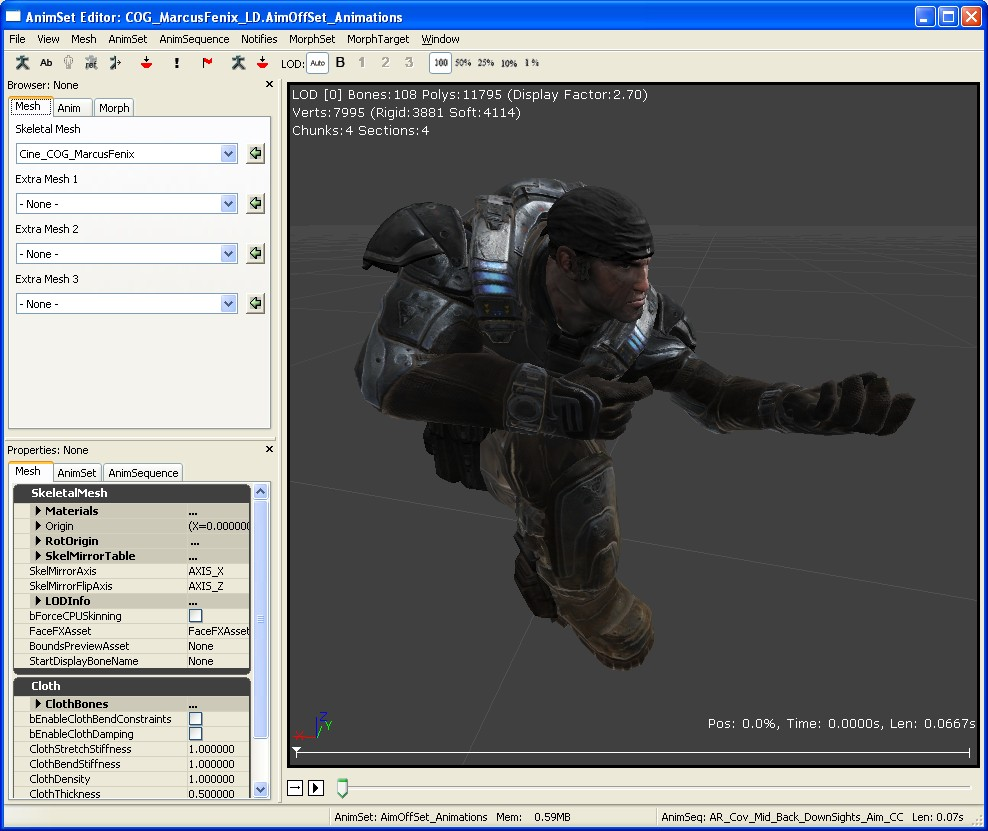
| 1 | メニューバー? および ツールバー? | 可視化とナビゲーションツール。 |
| 2 | プレビュー ペイン? | 骨格メッシュのアニメーションのプレビュー。 |
| 3 | ブラウザ ペイン? | メッシュ、アニメーションセットとシーケンス、morph ターゲットとシーケンスを閲覧。 |
| 4 | プロパティ ペイン? | メッシュ、アニメーションセット、またはアニメーションシーケンス。 |
メニュー バー
ファイル
- Import Mesh LOD...(メッシュLODをインポート)
- New AnimSet (新規のアニメーションセット)
- Import PSA (PSA をインポート)
- Import COLLADA Animation (COLLADA アニメーションをインポート)
- New MorphTargetSet (新しいモーフターゲットセット)
- Import MorphTarget (モーフターゲットをインポート)
- Import MorphTarget LOD(モーフターゲット LODをインポート)
ビュー
- Show Skeleton(骨組みを表示)
- Show Bone Names(ボーン名を表示)
- Show Reference Pose (参照ポーズを表示)
- Show Wireframe (ワイヤーフレームを表示)
- Show Mirror (ミラーを表示)
- Show Floor (フロアを表示)
- Show Grid (グリッドを表示)
- Show Sockets (ソケットを表示)
- Show Bounds (境界を表示)
- Show Collision (衝突を表示)
- Show Uncompressed Animation (解凍したアニメーションを表示)
- Show Soft Body Tetra (ソフトボディのテトラメッシュを表示)
- Show Morph Keys (モーフキーを表示)このメニューは、アニメーション データからモーフキーのウェイト情報を表示します。
- Alt. Bone Weighting Edit (代替ボーンウェイトを編集) このメニューは、現在の LOD の代替ボーンウェイトが存在する場合のみ使用できます。
- Show Tangent (接線を表示)
| As Vector (ベクトルとして) | 選択したマテリアルセクションの各頂点の接線を表示します。頂点を選択すると情報を参照できます。 |
| As Texture (テクスチャとして) | 接線ベクトルをテクスチャ UV にマッピングします。ベクトルの方向を可視化するのに便利です。 |
- Show Normal (法線を表示)
| As Vector (ベクトルとして) | 選択したマテリアルセクションの各頂点の法線を表示します。頂点を選択すると情報を参照できます。 |
| As Texture (テクスチャとして) | 法線ベクトルをテクスチャ UV にマッピングします。ベクトルの方向を可視化するのに便利です。 |
- Show Mirror (ミラーを表示) UV マッピングのミラー化情報を表示します。
- Show Material Section (マテリアルセクションを表示) 接線/法線/ミラーを表示する対象となるマテリアルセクションを選択します。
メッシュ
- Set LOD Auto (LOD を自動設定)
- Force LOD Base Mesh (LOD のベースメッシュを強制)
- Force LOD 1 (LOD 1 を強制)
- Force LOD 2 (LOD 1 を強制)
- Force LOD 3 (LOD 1 を強制)
- Remove An LOD (LOD を削除)
- Auto-build Mirror Table (ミラー テーブルの自動作成)
- Check Mirror Table (ミラー テーブルをチェック)
- Copy Mirror Table to Clipboard (ミラー テーブルをクリップボードにコピー)
- Copy Mirror Table From Selected SkelMesh (選択した骨格メッシュからミラー テーブルをコピー)
- Update Bounds (境界を更新)
- Copy Bones Names To Clipboard (ボーン名をクリップボードにコピー)
- Merge Mesh Materials (メッシュ マテリアルをマージ)
- Fixup Bone Names (ボーン名を修正)
- Socket Manager (ソケット マネージャ)
アニメーションセット
- Reset AnimSet (アニメーションセットをリセット)
- Delete Track (トラックを削除) 現在の AnimSet にあるすべてのアニメーションから Bone トラックを削除します。
- Delete Morph Track (モーフトラックを削除)現在の AnimSet にあるすべてのアニメーションからモーフキーを削除します。
アニメーションシーケンス
- Rename Sequence (シーケンスの名前を変更)
- Delete Sequence(s) (シーケンスを削除)
- Copy Sequence(s) to current or selected AnimSet (選択されている AnimSet か、または現在の AnimSet にシーケンスをコピー)
- Move Sequence(s) to selected AnimSet (選択したアニメーションセットにシーケンスを移動)
- Convert Sequence(s) to Additive Animation (シーケンスを Additive アニメーションに変換)
| Reference Pose | メッシュのバインドポーズをベースポーズとして使用します。 |
| Animation First Frame | 選択されたベースポーズのアニメーションの先頭フレームを使用します。 |
| Animation Scaled | (アニメーションをスケーリング)選択されたベースポーズのアニメーションをターゲットアニメーションに合わせてスケーリングします (長さが異なる場合 (デフォルト) |
| Looping Animation | (アニメーションをループ)アニメーションのループ再生で最後のフレームから最初のフレームへの補間を処理することです。これは、ターゲットとベースアニメーションの長さが異なる場合のみ有効です。 |
- Add Additive Animation to selected Sequence(s) (選択したシーケンスに Additive アニメーションを加算)
- Substract Additive Animation to selected Sequence(s) (選択したシーケンスから Additive アニメーションを減算)
- Copy Sequence Name to Clipboard (シーケンス名リストをクリップボードにコピー)
- Copy Sequence Name List to Clipboard (シーケンス名リストをクリップボードにコピー)
- Apply Rotation (回転を適用)
- ReZero On Current Position (現在の位置をゼロに戻す)
- Remove Before Current Position (現在の位置の前を削除)
- Remove After Current Position (現在の位置の後ろを削除)
通知
- New Notify (新規通知)
- New Notify (新規通知)
モーフセット
- Update Morph Targets (モーフターゲットを更新)モーフ ターゲットの頂点バッファのインデックスをベースメッシュにマッピングし直します。ターゲットがロードされていて、インデックスの変更が検出された場合は、自動的に行われます。 これは未完成の機能ですが、ベースメッシュのウェイトだけ変更されたときは機能します。Maya または 3ds Max で頂点の順番や位置が変更されているときは機能しません。
モーフターゲット
- Rename Morph Target (モーフターゲットの名前変更)
- Delete Morph Target (モーフターゲットの削除)
アニメーション圧縮
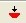
- アニメーション圧縮ダイアログ を開きます。Alt. Bone Weighting (代替ボーンウェイト)
- Import Mesh Weights... (メッシュウェイトをインポート) 代替メッシュウェイトをインポートします。
- Toggle Mesh Weights... (メッシュのウェイトをトグル) 代替メッシュウェイトに切り替えます。
- Show All Mesh Vertices... (メッシュ頂点をすべて表示) メッシュの頂点をすべて表示します。
- Delete Bone Break Vert Weightings... (ボーンブレイク頂点ウェイトを削除) [Calculate Bone Break Vert Weightings] (ボーンブレイク頂点ウェイトを計算) を使って該当する頂点ウェイトを削除/リセットし、*BreakBoneNames* と関連データを消去します。
ウィンドウ
ブラウザ: ブラウザペインを表示。 プロパティ: プロパティぺインを表示。ツールバー
| アイコン | 名前 | 解説 |
|---|---|---|
| 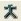 | Show Skeleton (骨組みを表示) | 現在の骨組みを表示します |
| Show Additive Base (Additive アニメーションのベースを表示) | Additive アニメーションを表示するときにそのベースポーズも表示します | |
| 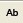 | Show Bone Names (ボーン名を表示) | |
| 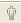 | Cycle Mesh Rendering (メッシュのレンダリングモードをサイクル変換) | リット、ワイヤーフレーム、オフ (骨格が分かりやすく表示されるように) 間を循環切り替えします |
| 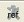 | Show Reference Pose(参照ポーズを表示) | |
| 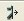 | Show Mirror(ミラーを表示) | このオプションはメッシュ上にてミラーされた既存のアニメーションを表示します。これを作動するには、有効なミラーリングテーブルセットアップが必ず必要です。詳細については、 アニメーションミラーリング をご覧ください。 |
| 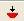 | Socket Manager( ソケットマネージャー) | |
| 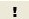 | New Notify(新規通知) | |
| 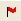 | Toggle Cloth(頂点クロスのトグル) | このオプションは、頂点 Cloth(クロス) のシミュレーションをトグルします。 |
| 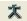 | Show Uncompressed Animation(非圧縮アニメーションを表示) | |
| Animation Compression...(アニメーション圧縮) | アニメーション圧縮ダイアログ を開きます。 | |
| LOD | StaticMesh エディタ参照? と同じ設定です。 Auto 、 Base または Force LOD 1_、 _2_、か _3 からえらびます。 | |
| Animation Speed(アニメーションスピード) | Full Speed_、 _0.5 Speed_、 _0.25 Speed_、 _0.1 Speed_、または _0.01 Speed から選びます。 | |
| 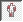 | Alt. Bone Weighting Edit Mode (代替ボーンウェイトの編集モード) | 選択したボーンの代替ボーンウェイトの表示や編集を行います。 |
ブラウザ ペイン
メッシュ
- 骨格メッシュ
- エキストラメッシュ (1-3)
Anim (アニメーション）
- AnimSet
- アニメーションシーケンス
Morph
- MorphTargetSet（モーフターゲットセット）
- MorphTargets（モーフターゲット）
スケレタル階層ペイン
Windowsメニュー下に、スケレタル階層をオンにするオプションがあります。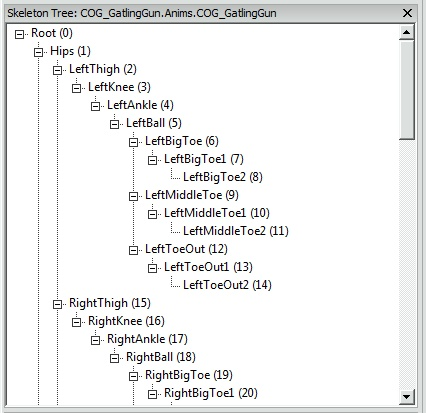
選択したメッシュに関連したスケルトンの階層的な作りをここで見ることができます。 ボーンをクリックすることで、モデル上のボーンをハイライトし、そのボーンを操作するためのウィジェットが表示されます。ビューポート表示の時スペースバーを押すことで、平行移動と回転ウィジェット間を切り替えることができます。ウィジェットの操作することで、カレントのアニメーションまたはスケレタルポーズからムーブメントデルタを表示します。操作中にほかのボーンをクリックすることで前のボーンをリセットします。。
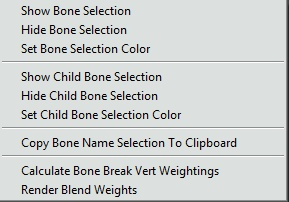
こちらがそのポップアップメニューです：
- Show the selected bone (選択したボーンを表示)
- Hide the selected bone (選択したボーンを非表示)
- Set a render color for the selected bone (選択したボーンのレンダーカラーを設定)
- Show the selected bone's children(選択したボーンの子を表示)
- Hide the selected bone's children(選択したボーンの子を非表示)
- Copy the entire bone hierarchy as text to the clipboard (クリップボードにボーン階層全体をテキストとしてコピー)
- Calculate the bone influence breaks for alternate bone weights between this bone and its parent (このボーンと親の間にある代替ボーンウェイトのボーン影響ブレイクポイントを計算) : このメニューは、代替ボーンウェイトの編集モードにいる間に有効になります。
- Delete/Reset the bone influence breaks for alternate bone weights for all bones (すべてのボーンの代替ボーンウェイトのボーン影響ブレイクポイントを削除/リセット) : このメニューは、代替ボーンウェイトの編集モードにいる間に有効になります。
- Enable and disable vertex blend weight rendering (頂点ブレンドウェイトレンダリングを有効および無効)
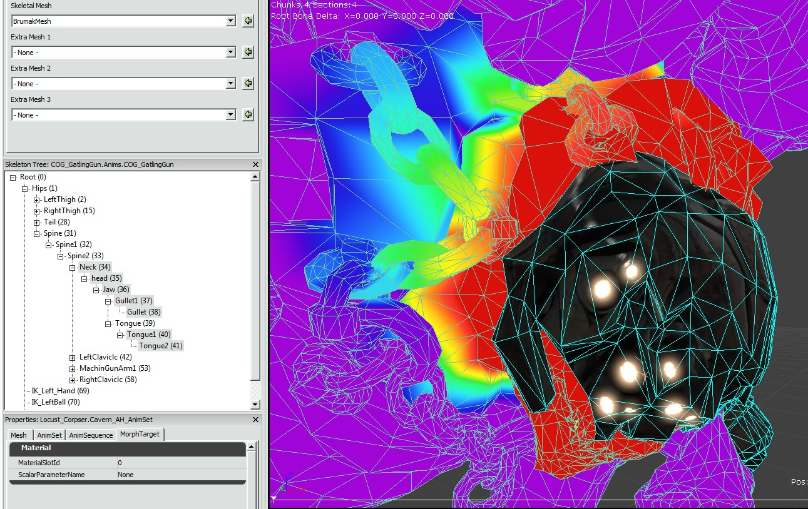
代替ボーンウェイトの編集モード (ボーン影響度の編集)
エンジンは、骨格メッシュごとに代わりのボーンウェイト/影響度の軌跡保存概念をサポートします。ランタイム時に、それらの軌跡は一対のボーンごとにスワップされ、主要な骨格メッシュからのクリーン・ブレイクを可能にします。指定したボーンにより影響された各頂点は、新しいボーンウェイトの一組と共に別の軌跡上でスワップされます。暴力、流血やキャラクターのボディから肢体を分離にすることによる、グロテスクな効果が想定されます。 これをセットアップするには、アーティストは最初に複数のメッシュをDCTに作成します。一つは通常の移動中のボーン影響でのものと、もう一つは適当な肢体、または主要のボディからの分離をサポートするために異なるウェイトが置かれたメッシュセクションでのものです。 最初のメッシュをインポートしてから、[Alt. Bone Weighting: Import Mesh Weights] を使って代替ボーンウェイトをインポートします。インポート先となる LOD を選択します。LOD の元のメッシュに続けて、新しい代替メッシュを指定します。ここでは 2 つのメッシュの頂点インデックスが一致することを当然の前提条件としています。このメッシュから、ボーン影響度と LOD における各ウェイトのリストが新たに作成され保存されます。 これでメッシュはもう一つの影響度の軌跡をもつため、ボーンのブレイクは特定される必要があります。最初に、ツールバーで代替ボーンウェイトの編集 (ボーン影響度の編集) モードをオンにします。正しい LOD が選択できる状態にあることを確認します。現在の LOD に代替ボーンウェイトが存在しなければ、このメニューは無効になります。さらに、編集モードにいる間は LOD を変更できません。 次に、スケルトンツリーで、ボーン間のブレイクをするすべてのボーンをクリックすると、その親が表示されます。それらは一度に一つまたは、複数選択されます。赤い頂点は選択した各ボーンのビューで表示されますので留意してください。これらは選択したボーンまたはその親により影響を受けたすべての頂点を表します。 右クリックをし、"Calculate Bone Break Vert Weightings"(ボーンブレイク頂点ウェイトを計算)を選択します。選択した両方のボーンおよびその親により影響されている頂点がある場合は、その頂点は白に変わります。
右クリックをし、"Calculate Bone Break Vert Weightings"(ボーンブレイク頂点ウェイトを計算)を選択します。選択した両方のボーンおよびその親により影響されている頂点がある場合は、その頂点は白に変わります。
 その白い頂点は、ゲームでボーンブレイクが発生すると影響をスワップします。影響がスワップされたかを見るには、translation/rotation (平行移動/回転)ウィジェットを使います。分離が完了している上記の例は、主要のボディに頂点が引き伸ばしがされていないので留意してください。ブレイク計算用のアルゴリズムは非常に単純です。両方のボーンにウェイトがかかっていないため頂点が見つからない場合は、手動でブレイクを追加することができます。赤い頂点をダブルクリックすると、それが白に変わり、リストに追加し、引き伸ばした部分を削除します。同じ方法で頂点を削除することができます。
ブレイクがされるごとに、SkeletalMeshのBoneBreakNames 変数にボーン名が追加されます。この配列はメッシュの再インポートやブレイク計算にわたり維持され、自動的に再試行されます。最後のインポート中に頂点リストを作成した手動の操作は含まれません。
その白い頂点は、ゲームでボーンブレイクが発生すると影響をスワップします。影響がスワップされたかを見るには、translation/rotation (平行移動/回転)ウィジェットを使います。分離が完了している上記の例は、主要のボディに頂点が引き伸ばしがされていないので留意してください。ブレイク計算用のアルゴリズムは非常に単純です。両方のボーンにウェイトがかかっていないため頂点が見つからない場合は、手動でブレイクを追加することができます。赤い頂点をダブルクリックすると、それが白に変わり、リストに追加し、引き伸ばした部分を削除します。同じ方法で頂点を削除することができます。
ブレイクがされるごとに、SkeletalMeshのBoneBreakNames 変数にボーン名が追加されます。この配列はメッシュの再インポートやブレイク計算にわたり維持され、自動的に再試行されます。最後のインポート中に頂点リストを作成した手動の操作は含まれません。
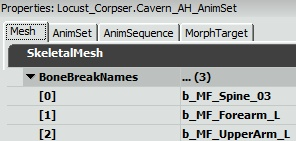
プロパティ ペイン
メッシュ
骨格メッシュ プロパティ:- Materials
- Origin
- RotOrigin
- SkelMirrorTable
- SkelMirrorAxis
- bAnimRotationOnly
- LODInfo
- bForceCPUSkinning
- bUseFullPrecisionUVs
- FaceFXAsset
- BoundsPreviewAsset
- StartDisplayBoneName
- ClothBones
- bEnableClothBendConstraints
- bEnableClothDamping
- ClothStretchStiffness
- ClothBendStiffness
- ClothDensity
- ClothThickness
- ClothDamping
- ClothIterations
- ClothFriction
AnimSet
AnimSet プロパティ:- bAnimRotationOnly
- UseTranslationBoneNames (ボーン名変換を使用)
AnimSequence
AnimSequence プロパティ:- 通知 - AnimSequenceにて特定の時間で発動されたイベントの通知。いくつかご利用可能となっています：
- AnimNotify_Sound – SoundCue をトリガする。
- AnimNotify_Footstep – このAnimSequenceを再生するPawn クラス内にイベント PlayFootStepSound() を呼び出す。
- AnimNotify_Script
- AnimNotify_PlayFaceFXAnim
- AnimNotify_ViewShake
- AnimNotify_PlayParticleEffect – 2008 年7月QAビルドにて新規導入
- AnimNotify_CameraEffect– 2008 年7月QAビルドにて新規導入
- AnimNotify_Rumble – 2008 年7月QAビルドにて新規導入
- RateScale
- CompressionScheme